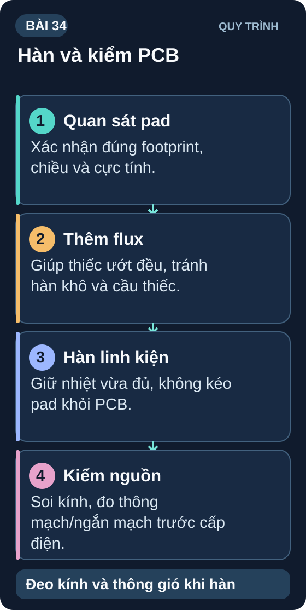

Hàn SMD & Kiểm Tra PCB
Kỹ thuật hàn linh kiện SMD thực tế — từ 0402 đến IC SOIC — và quy trình kiểm tra PCB hoàn chỉnh sau hàn.
- Phân biệt hàn THT (Through-Hole) và SMD (Surface Mount)
- Chuẩn bị dụng cụ hàn SMD: mỏ hàn nhiệt độ kiểm soát, thiếc SMD, flux
- Kỹ thuật hàn SMD 0805, 0603 bằng mỏ hàn
- Hàn IC SOIC-8 bằng kỹ thuật drag soldering
- Hàn IC QFP/TQFP bằng hot air và solder paste
- Nhận biết và sửa cold joint, solder bridge, tombstoning
- Quy trình kiểm tra PCB: Visual → Continuity → Power-on test
- Sử dụng kính lúp hoặc microscope để kiểm tra mối hàn

1. Dụng cụ hàn SMD
| Dụng cụ | Thông số tối thiểu | Ghi chú |
|---|---|---|
| Mỏ hàn điều chỉnh nhiệt độ | 200–450°C, 60W+, đầu nhỏ (Hakko T12/T15) | Không dùng mỏ hàn cố định 30W cho SMD |
| Thiếc SMD | Sn63Pb37 hoặc Pb-free SAC305, 0,3–0,5mm | Thiếc mảnh hơn dễ kiểm soát lượng |
| Flux dạng paste/gel | No-clean flux | Bắt buộc cho SMD — giúp thiếc chảy đều |
| Tweezers SS-SA (nhíp cong) | ESD-safe | Giữ linh kiện khi hàn |
| Braid/Wick hàn | 2–2,5mm | Hút bỏ thiếc thừa khi bridge |
| Kính lúp (10x–30x) | Có đèn LED | Kiểm tra mối hàn |
| Hot air station (tùy chọn) | 200–450°C, airflow điều chỉnh | Cần cho QFP, BGA, TSSOP |
2. Kỹ thuật hàn SMD từng loại
2.1 Linh kiện thụ động SMD (0805, 0603, 0402)
Thiếc một pad: Thoa flux, chạm mỏ hàn vào pad + thêm thiếc nhỏ → "pre-tin" 1 pad.
Đặt linh kiện: Dùng nhíp đặt linh kiện, chạm mỏ hàn vào pad pre-tin → thiếc chảy → linh kiện được giữ cố định.
Hàn pad còn lại: Thoa flux → chạm mỏ hàn + thiếc vào pad thứ 2.
Kiểm tra: Mối hàn phải sáng bóng, hình nón nhỏ, không cầu nối hai pad.
2.2 IC SOIC-8 — Drag Soldering
Thoa flux đều lên tất cả pads và chân IC.
Canh chỉnh IC — đảm bảo tất cả chân thẳng hàng trên pad. Hàn cố định 2 chân góc chéo nhau trước.
Thêm thiếc vào mỏ hàn (đầu bằng hoặc dao). Kéo mỏ hàn dọc theo một hàng chân — thiếc sẽ chảy qua từng chân.
Kiểm tra bridge: Dùng kính lúp. Bridge = dùng braid/wick hút bỏ. Thêm flux để dễ hút hơn.
3. Nhận biết và sửa lỗi hàn phổ biến
| Lỗi | Nguyên nhân | Sửa |
|---|---|---|
| Cold Joint (mờ đục) | Nhiệt độ không đủ hoặc di chuyển khi thiếc chưa đông | Re-flow: thoa flux, đặt mỏ hàn lại cho thiếc chảy và đông chuẩn |
| Solder Bridge (cầu nối) | Quá nhiều thiếc hoặc kỹ thuật drag không chuẩn | Thoa flux, dùng wick/braid hút bỏ thiếc thừa |
| Tombstoning (linh kiện đứng thẳng) | Pad 1 chảy nhanh hơn pad 2 → sức căng bề mặt kéo linh kiện | Hàn 2 pad đồng thời hoặc pre-tin đều cả 2. Thường gặp với 0402 |
| Lifted pad (pad bong) | Nhiệt quá cao hoặc quá lâu | Không sửa được — phải dùng wire jumper nối thay |
4. Quy trình kiểm tra PCB sau hàn
Visual Inspection: Nhìn bằng mắt/kính lúp — kiểm tra cold joint, bridge, linh kiện đặt ngược.
Continuity Test (không cấp nguồn): Dùng Ω/Beep kiểm từng net quan trọng và tìm cầu hàn. Điện trở VCC↔GND của board đã gắn linh kiện phụ thuộc mạch; không dùng một ngưỡng 10kΩ hay 100kΩ chung để kết luận an toàn.
Short Circuit Check: So kết quả đo VCC↔GND với sơ đồ, tụ đầu vào và mạch tương tự đã biết. Điện trở gần 0Ω không giải thích được phải được tìm và sửa trước khi cấp điện; điện trở lớn không chứng minh pinout hay cực tính đúng.
Current Limited Power-on: Chỉ thực hiện sau khi xác minh đúng PCB/revision, cực tính, nguồn và tính ngân sách dòng lúc khởi động/nhàn rỗi. Đặt giới hạn dòng theo mạch cụ thể, tăng điện áp có kiểm soát và đo từng rail; ngắt ngay khi có nóng, mùi hoặc dòng bất thường. Nếu chưa có hồ sơ này, dừng ở rà schematic/PCB không cấp nguồn.
Functional Test: Sau khi cổng cấp nguồn đạt, kiểm từng chức năng so với test plan. Với bài học chưa có board xác định, lập test plan và giá trị kỳ vọng thay cho tuyên bố đã thử trên PCB.
1: Mối hàn tốt: sáng bóng, hình nón concave (lõm) nhỏ gọn, bám đều vào pad và chân linh kiện. Cold joint: mờ đục, xám, hình dạng không đều (lồi hoặc gồ lên), có thể thấy hạt nhỏ trong thiếc — thiếc không chảy hoàn toàn → mối nối điện trở cao và dễ nứt cơ học.
2: Không thể kết luận chỉ từ 15Ω: điện trở tĩnh phụ thuộc tải và đường mạch, còn tụ có thể làm số đo thay đổi theo thời gian. Tạm chưa cấp nguồn; đối chiếu schematic/BOM, tính dòng kỳ vọng của rail, đo lại theo từng chiều que và kiểm cầu hàn/cực tính. Nếu giá trị trái với thiết kế, cô lập các nhánh theo quy trình sửa có kiểm soát; không tháo IC hoặc cấp điện chỉ dựa vào một ngưỡng chung.
3: (a) Thoa flux gel lên chân 3–4; (b) Đặt braid/wick lên chân bị bridge; (c) Đặt mỏ hàn lên braid (không trực tiếp lên chân IC) — nhiệt truyền qua braid → thiếc chảy vào braid; (d) Nhấc braid lên trong khi còn nóng (không nhấc khi đã nguội); (e) Kiểm tra lại bằng kính lúp. Lặp lại nếu cần.